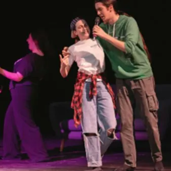

da ven 4 dic a sab 5 dic · dalle 20:00
No volevi disturbâ
4 e 5 dicembre 20:00 organizzato dal Teatri Stabil Furlan Libare elaborazion dal test “Karaoke Elusia” Di Oriol Puig Grau Cun “I Fantats dal Teatri Stabil” – Emma Bellina, Leonardo De Agostini, Tosca Ponte , Alessia Zomero Regjie Nicoletta Oscuro Cu la colaborazion di Hugo Samek…
 Indicazioni
Indicazioni
- Costi e prenotazioni
- Costo non indicato · Prenotazione non indicata
- Programma
- Programma da verificare. Apri la fonte ufficiale per orari e possibili aggiornamenti.
- In caso di maltempo
- Nessuna indicazione specifica pubblicata.
- Note
- Acquisito automaticamente dalla fonte.
L’EVENTO
Descrizione completa
Libare elaborazion dal test “Karaoke Elusia” Di Oriol Puig Grau Cun “I Fantats dal Teatri Stabil” – Emma Bellina, Leonardo De Agostini, Tosca Ponte , Alessia Zomero Regjie Nicoletta Oscuro Cu la colaborazion di Hugo Samek Intune societât dulà che se tu esprimis lis tôs dificoltâts tu vegnis bolât tant che debil, al è fondamentâl che i grancj a vierzedin i voi su ce che ur sucêt pardabon ai zovins, che i fruts no si sintedin di bessôi, ma capîts. Emma . Fâ fente di no viodi il probleme no lu fâs scomparî, anzit. Alessia . E je ore che i gjenitôrs a capedin che a son problemis reâi che no si ju ferme distudant il telefonin o cambiant di scuele. Leonardo . Si à di cjatâ une altre maniere di fevelâ di chestis robis. Tosca . Cuatri zovins e ce che i grancj no viodin. Il teatri par ricostruî une vicende masse dolorose. Lis dinamichis tossichis platadis tal mont di un adolessent, che i frutats a frontin fevelant dome tra di lôr. Un berli di jutori. Une societât sorde che no protêç i siei fîs, proponintjur modei plens di violence, prevaricazion, competizion, mancjance di empatie. Temis sensibii tratâts cun plui gracie che si pues. I zovins che a cjapin la peraule: un lamp di lûs tal scûr, al public o domandìn dome di scoltâju, fin ae fin. In una società dove se esprimi le tue difficoltà vieni etichettato come debole è fondamentale che gli adulti aprano gli occhi su ciò che accade davvero ai giovani, che i ragazzi non si sentano soli, ma capiti. Emma. Ignorare il problema non lo fa scomparire, anzi. Alessia . È ora che i genitori capiscano che sono problemi reali che non si fermano spegnendo il telefono o cambiando scuola. Leonardo . C’è bisogno di trovare un altro modo per parlarne. Tosca . 4 giovani e ciò che gli adulti non vedono. Il teatro per ricostruire una vicenda troppo dolorosa. Le dinamiche tossiche celate nel mondo di un adolescente, di cui i ragazzi parlano solo tra loro.Un grido d’aiuto. Una società sorda che non protegge i propri figli, proponendogli modelli pieni di violenza, sopraffazione, competizione, mancanza di empatia.Temi sensibili trattati con la maggiore grazia possibile. I giovani che prendono parola: un lampo di luce nel buio, al pubblico chiediamo solo di ascoltarli, fino alla fine.
Biglietto intero: € 15,00
Biglietto ridotto: € 10,00 (riservato a under 25, over 65 e possessori di un biglietto "intero" di uno spettacolo precedente)
Biglietto super-ridotto: € 5,00 (riservato a under 12, abbonati ad altre stagioni teatrali e possessori di un biglietto "ridotto" di uno spettacolo precedente)
Riduzione: € 2,00 (riservata a operatori del settore e artisti, persone con disabilità e possessori di un biglietto "super-ridotto" di uno spettacolo precedente) Per informazioni: info@teatristabilfurlan.it / tel 392 3273719
www.teatristabilfurlan.it
IL PROGRAMMA
Programma e orari
Appuntamenti raccolti dalle fonti elencate. Dove manca un orario, non è ancora disponibile in questa scheda.
Programma pubblicato
- Dal 2026-12-04 al 2026-12-05
INFORMAZIONI UTILI
Prima di partire
- Controllare la fonte prima di partire.
ORGANIZZAZIONE